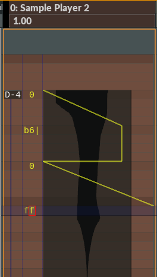

FX text
FX text is an alternative way to edit instrument automation in the editor. Editing text is often quicker than editing effects graphically.To enable FX text, right-click inside a track and enable "FX text".
FX text format: xxt, where
xx = effect value. 0 = lowest value, ff = highest value. (hex format)
t = Whether to glide to the next effect or not (denoted by '|').
Tips:
- Press 'G' to quickly add an ff node.
- Press 'T' to switch glide mode (i.e. add or remove the | character).
- Press 'Left Alt + X' to cut current fx track.
- Press 'Left Alt + C' to copy current fx track.
- Press 'Left Alt + V' to paste into current fx track.
A special situation Let's say you have an fx with two nodes. The first node has the value '6e|', and the second node has the value '28 '. Q: Will the value 28 be sent to the instrument? A: Yes.